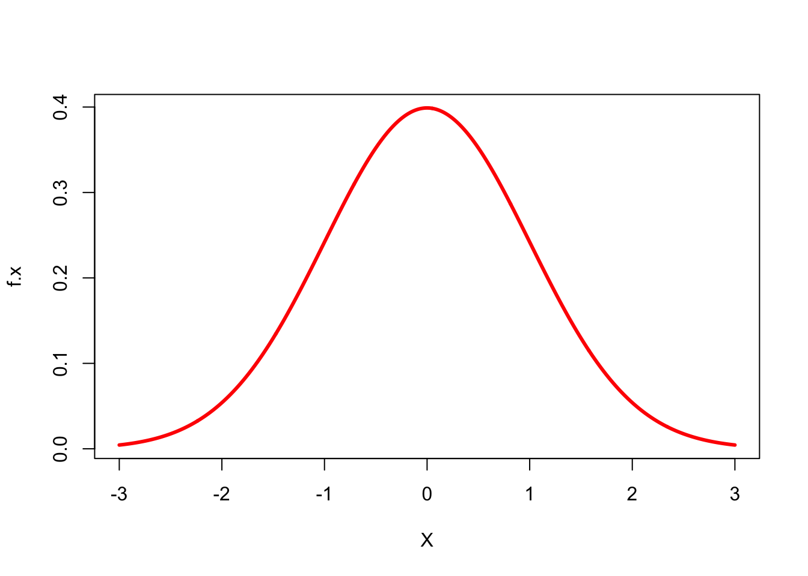
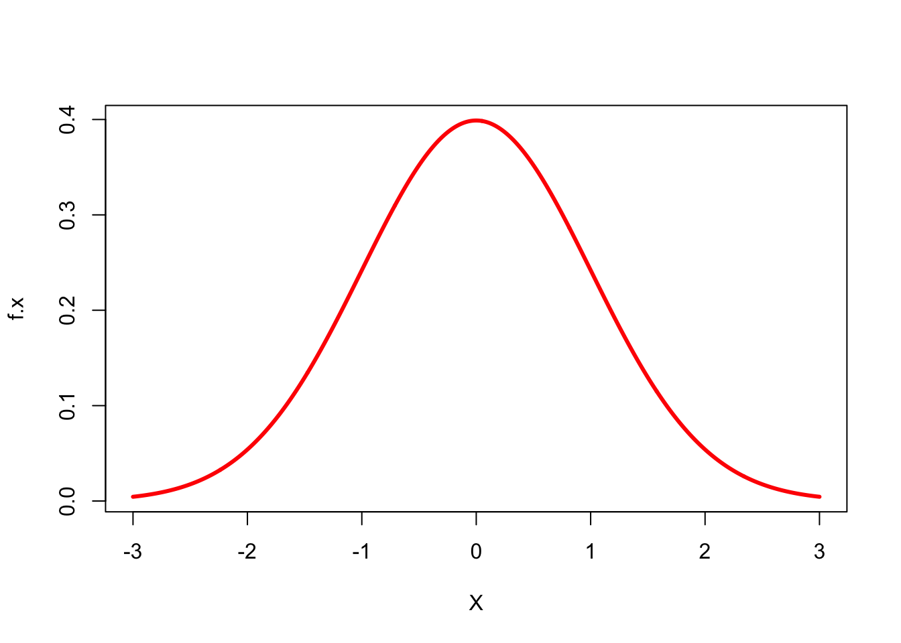
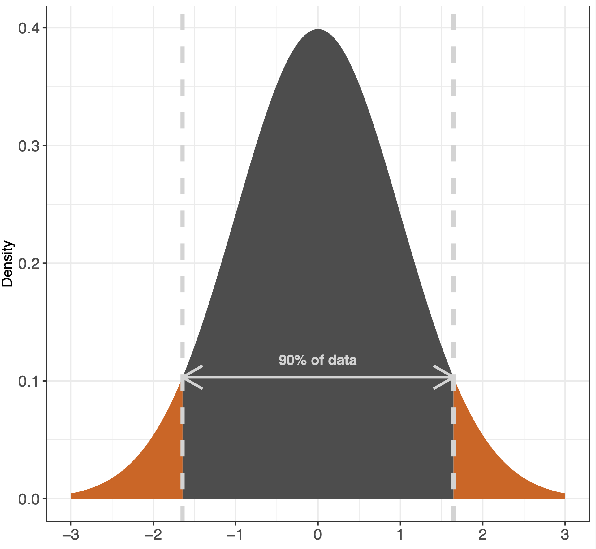
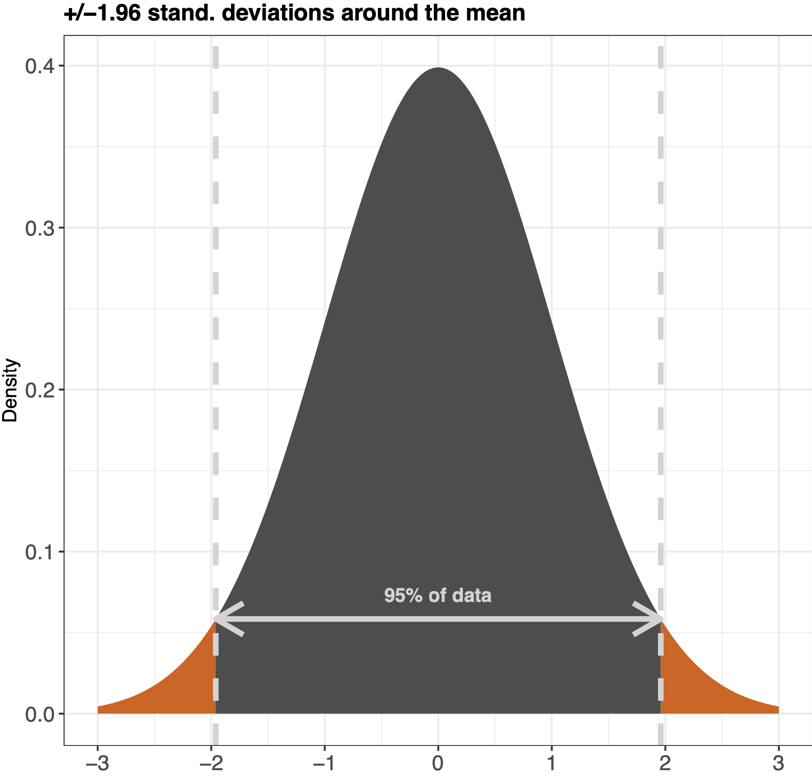
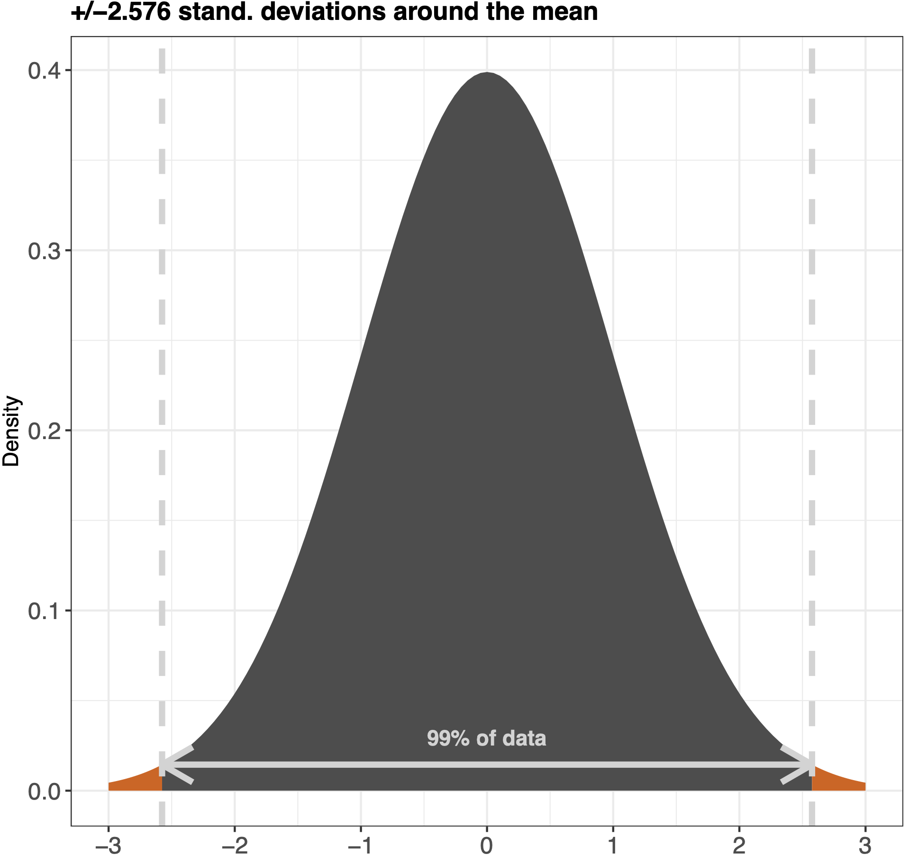
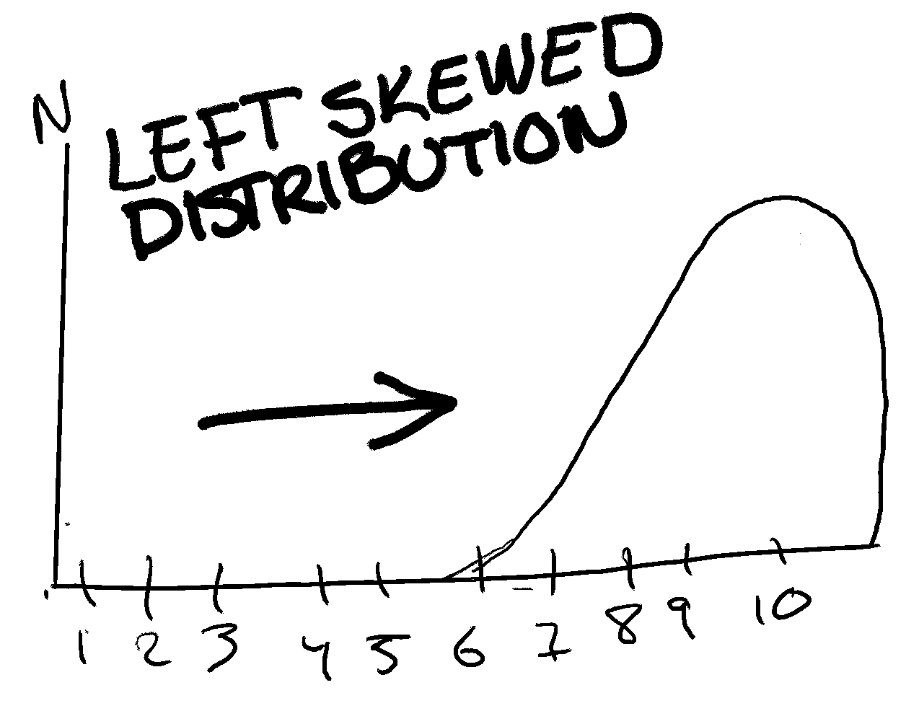
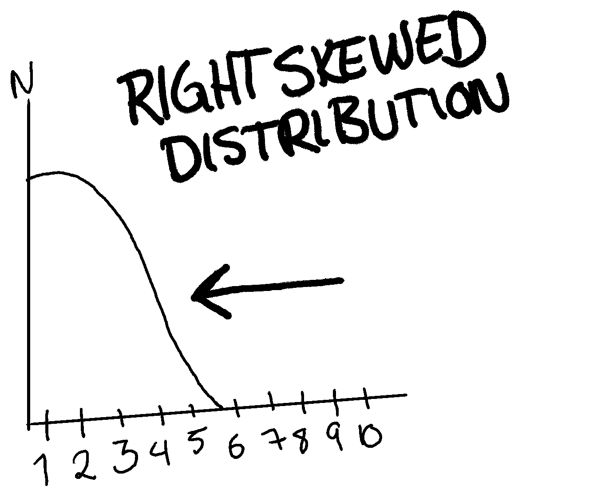

X <- seq(from=-3, to=3, length.out=1000)
f.x <- dnorm(X, mean = 0, sd = 1)
plot(X, f.x, type = 'l', col = "red", lwd=3)
Knut Solvig
January 23, 2024
In this blog post I wish to use some time to talk about the normal distribution or the bell curve.
The normal distribution is the ideal distribution of data as it is very easy to intepret, but even though it is called a normal distribution - it rarely occurs in scientific analyses.
Below you can see what a bell curve looks like in a simplified format in Figure 1:
X <- seq(from=-3, to=3, length.out=1000)
f.x <- dnorm(X, mean = 0, sd = 1)
plot(X, f.x, type = 'l', col = "red", lwd=3)
The great thing about a bell curve is that you can use the 68-95-99 rule on it (like mentioned in Kellstedt & Whitten page. 150). This rule is basically the amount of data that are within the standard deviations of the mean in the graph. See the example below:



A way to understand how the bell curve works is to imagine that you roll a dice 1000 times. You are more likely to get a 3 or a 4 than you are to get 6 or 1, in that way everytime you plot into your dataset a dice throw you are creating a graph which should be relatively evenly distributed - like a bell curve.
Other than the bell curve as mentioned above, it is not always the case (actually very rarely) that we get such a perfect distribution where most of the respondents lay in the middle. Though this is what we would hope for, we will now look into the other types of distributions you can stumble upon during your experimenting with quantitative methods.
The first one, a left-skewed distribution is when most of your data points are to the right (I know that sounds wrong, that left-skewed has data points to the right... But it is. Imagine that there are someone (to the left) pushing your data to to the right.) of the distribution. For example, if respondents had to choose on a scale from 1 to 10 how happy they felt at the very moment, we might end up with a left-skewed distribution where most of the data points are to the right of the scale. See an exaggerated illustration of this below:

A right-skewed distribution is basically the same theory as a left-skewed one. Here the data points are more to the left than the middle. An example of this is below:

presented**
Now, if the skewness would be 0, it would mean that the distribution is perfectly surrounding the mean, which is hard if not impossible with real world data. If the number is negative, however, it means that the distribution is right-skewed, how much depends on the actual number. A number below -1 amounts to a high right-skewness, and the same if the number is +1.
Kurtosis looks at the top of the distribution. Wether or not the distribution is more level or very “pointy”. This is to get an idea of how many resides on the mean of the data points.
A negative kurtosis means that the distribution is flat. A positive means it’s peaking. A good rule for kurtosis is that it should not be less than -2 and not more than +2.
Skewness and kurtosis are both important. Though, skewness is more looked at than kurtosis and your focus should therefore reside on this. However, knowing what kurtosis means and is, is useful.
A skewed distribution can affect the way that we do inferences of our data. That is why we need to know about skewness. For example, if you’re doing analysis of a variable and find that it has a right-skewed distribution, it might not be ideal to use for inferences in the same way as a bell-curve/normal distribution. Some statistical models might also not work well if this is the case.
Thank you for reading, I hope you are now a little bit smarter around the topic of the normal distribution - also called a bell curve.